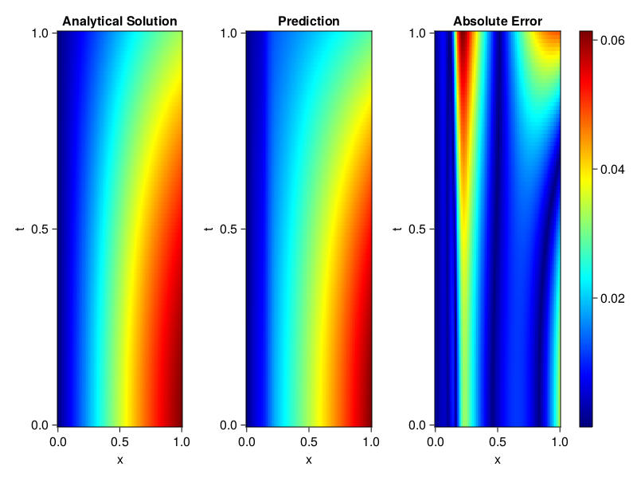
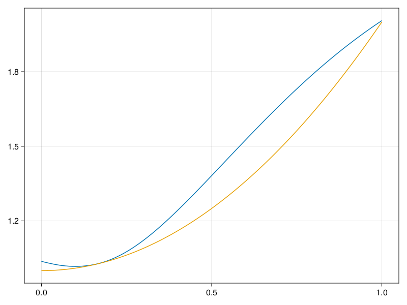

Inverse problem for the wave equation with unknown velocity field
We are going to sovle the wave equation.
using Sophon, ModelingToolkit, IntervalSets
using Optimization, OptimizationOptimJL
@parameters x, t
@variables u(..), c(..)
Dₜ = Differential(t)
Dₜ² = Differential(t)^2
Dₓ² = Differential(x)^2
s(x,t) = abs2(x) * sin(x) * cos(t)
eq = Dₜ²(u(x,t)) ~ c(x) * Dₓ²(u(x,t)) + s(x,t)
bcs = [u(x, 0) ~ sin(x),
Dₜ(u(x, 0)) ~ 0,
u(0, t) ~ 0,
u(1, t) ~ sin(1) * cos(t)]
domains = [t ∈ Interval(0.0, 1.0),
x ∈ Interval(0.0, 1.0)]
@named wave = PDESystem(eq, bcs, domains, [t,x], [u(x,t),c(x)])\[ \begin{align} \frac{\mathrm{d}}{\mathrm{d}t} \frac{\mathrm{d}}{\mathrm{d}t} u\left( x, t \right) =& c\left( x \right) \frac{\mathrm{d}}{\mathrm{d}x} \frac{\mathrm{d}}{\mathrm{d}x} u\left( x, t \right) + \cos\left( t \right) \left|x\right|^{2} \sin\left( x \right) \end{align} \]
Here the velocity field $c(x)$ is unknown, we will approximate it with a neural network.
pinn = PINN(u = FullyConnected((2,16,16,16,1), sin),
c = FullyConnected((1,16,16,1), tanh))
sampler = QuasiRandomSampler(500,100)
strategy = NonAdaptiveTraining(1, (10,10,1,1))NonAdaptiveTraining{Int64, NTuple{4, Int64}}(1, (10, 10, 1, 1))Next we generate some data of $u(x,t)$. Here we place two sensors at $x=0.1$ and $x=0.5$.
ū(x,t) = sin(x) * cos(t)
x_data = hcat(fill(0.1, 1, 50), fill(0.5, 1, 50))
t_data = repeat(range(0.0, 1.0, length = 50),2)'
input_data = [x_data; t_data]
u_data = ū.(x_data, t_data)1×100 Matrix{Float64}:
0.0998334 0.0998126 0.0997503 0.0996464 … 0.275281 0.267213 0.259035Finally we construct the inverse problem and solve it.
additional_loss(phi, θ) = sum(abs2, phi.u(input_data, θ.u) .- u_data)
prob = Sophon.discretize(wave, pinn, sampler, strategy; additional_loss=additional_loss)
@time res = Optimization.solve(prob, BFGS(), maxiters=1000)u: ComponentVector{Float64}(u = (layer_1 = (weight = [-1.1304071597113776 1.32354975850012; -0.46434020005089094 0.21471686077486857; … ; -0.19911448998481285 1.135285884576015; -0.6478586184595271 1.4157661150539067], bias = [0.031448682493970176; -0.24465222744525358; … ; 0.29424868293923423; 0.08582172521306458;;]), layer_2 = (weight = [0.3216674919926335 0.10773438648679926 … 0.009444651977711627 0.04226014490305495; 0.44391570209556935 -0.11495059804057642 … 0.45981193232743073 -0.6130938924194779; … ; 0.2102964978441105 0.4608626428069713 … 0.4087820247650999 -0.07256685484244337; 0.03206226471835411 -0.29720747056640384 … 0.24847445439120971 0.17881258402556124], bias = [0.32189371779736803; -0.015200182448636732; … ; -0.04904284289840448; -0.019990317744471065;;]), layer_3 = (weight = [0.23125136973532556 0.11560357019511303 … 0.07536606980336628 -0.012604480840047444; -0.09743711502534554 0.4084242018508628 … 0.4797243641189213 0.5755946056913369; … ; 0.2683199551412491 0.14284852213307375 … -0.03276229388030428 0.6902001902471634; -0.38457108066362294 0.041774147738354 … 0.3654144076855069 0.5470101183366639], bias = [-0.04575746445446244; -0.01802687801167983; … ; -0.008241153082821062; -0.08643816077418433;;]), layer_4 = (weight = [-0.560032756711135 -0.2451708414843042 … -0.7528025016431877 -0.7302462250437471], bias = [0.038652828334822566;;])), c = (layer_1 = (weight = [1.9851128678593175; 0.818156723220553; … ; -1.5211053870781406; 0.5945497568461473;;], bias = [-0.046902671426631716; -0.3305446236114122; … ; -0.15802265346241243; 0.06969774665649883;;]), layer_2 = (weight = [0.55191086064409 0.4408771115978253 … -0.7072589222858214 0.2429761581556391; -0.13496361918683772 0.396335588840674 … 0.24901524538565617 0.5832111549314518; … ; 0.21931710718468014 -0.3479888099648908 … -0.6461511433637402 0.3148148631810173; 0.2523893055559893 -0.2869261203725285 … 0.4630126370472178 0.2648467027061888], bias = [0.05607048932859582; 0.0070489288458215485; … ; 0.25367941431794266; 0.05490190337178664;;]), layer_3 = (weight = [0.3359931831367221 0.009251823042308507 … 0.6710986882334236 0.28878836172520916], bias = [0.15733375679252598;;])))Let's visualize the predictted solution and inferred velocity
using CairoMakie
ts = range(0, 1; length=100)
xs = range(0, 1; length=100)
u_pred = [pinn.phi.u([x, t], res.u.u)[1] for x in xs, t in ts]
c_pred = [pinn.phi.c([x], res.u.c)[1] for x in xs]
u_true = [ū(x, t) for x in xs, t in ts]
c_true = 1 .+ abs2.(xs) |> vec
axis = (xlabel="x", ylabel="t", title="Analytical Solution")
fig, ax1, hm1 = heatmap(xs, ts, u_true, axis=axis; colormap=:jet)
ax2, hm2= heatmap(fig[1, end+1], xs, ts, u_pred, axis= merge(axis, (;title = "Prediction")); colormap=:jet)
ax3, hm3 = heatmap(fig[1, end+1], xs, ts, abs.(u_true .- u_pred), axis= merge(axis, (;title = "Absolute Error")); colormap=:jet)
Colorbar(fig[:, end+1], hm3)
fig
fig, ax = lines(xs, c_pred)
lines!(ax, xs, c_true)
fig